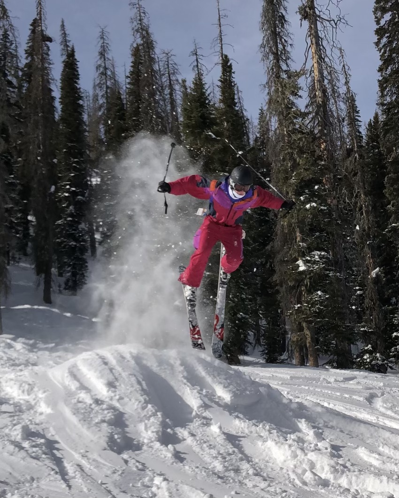
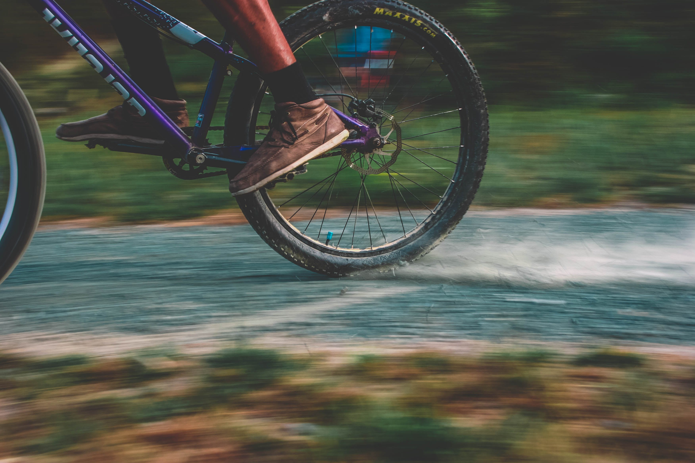
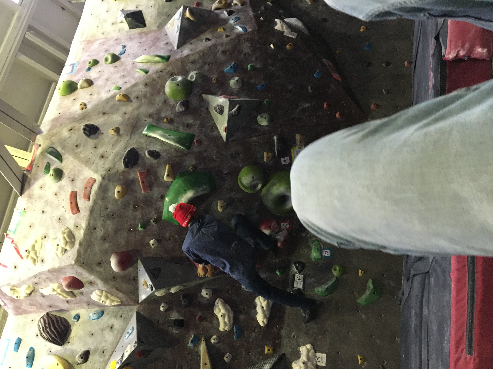
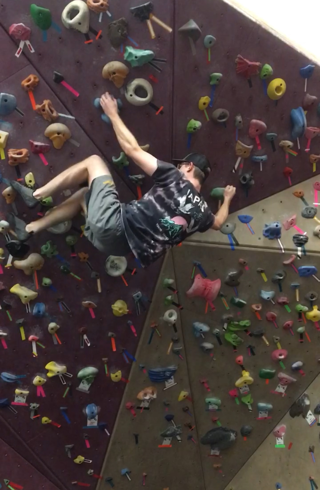
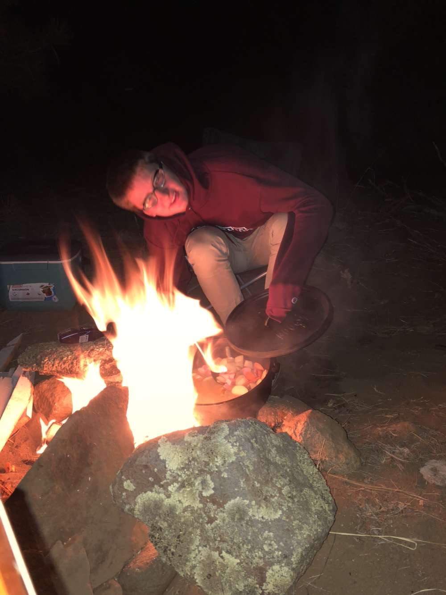

This is skiing. I like making turns in snow and sitting on moving chairs at the treetops.
In this photo here, I absolutely ate shit. I can't afford to make turns very often,
so I work up on a mountain as a teacher. Now other people can make turns too.

Contrary to snowboard and apparel manufacturer based in Denver: Never Summer,
it actually is summer like .. every year probably. I think mountain-biking is another
way to make turns.


This rock is a fake rock, but it's still hard. It's hard to climb up.
Climbing rocks is cool.

Camping, Fire. Cooking.